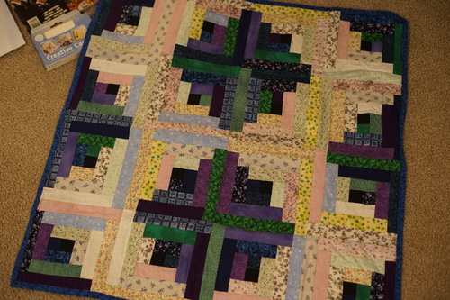

a sticker says "heavily meditated" but i thought it said "heavily medicated" im disappointed now
ryan liked it
ryan wanted it
i picked the bird one but ryan wanted to pick one this year so we both picked one
Diana will always be in our hearts
just blank cards with envelopes on nicer than normal paper. 9/10 of them are still in the package!
it's signed?!
30.5" square. im going to put it in hina's box.
I actually don't know any Howard Jones songs other than Things Can Only Get Better, but that one is good enough I'm happy to try more of his stuff. Someone must have dumped their collection because all three were sitting together. I opened one up to discover 3 autographs?! There's a Carol Steele autograph too which leads me to believe it was from the 1992 tour. I wonder who donated their signed CD...
it always upsets me to see homemade things in thrift stores. who recieves something that takes hours and hours to make and then just donates it? it makes me not want to make any homemade gifts. i dont want anything i make to end up in the trash because the thrift store couldnt sell it for 99 cents. thats just too sad... i leave a lot of quilts behind because the patterns are just too hideous, but this one was decent enough for me to take home. i also would fill my home with too much stuff if i needed to rescue every single homemade item. i washed it and folded it so it fits in hina's box so it will be safe in there.

i got a ring light for $11 on clearance. the brand is dixie&charli who i read are some tiktok zoomers or something. ive just been letting it light my room for a while waiting for it to randomly go out before the 30 day return period is up. hasnt gone out yet though. the stand isnt great but thats no surprise

i got the string lights for like 90 cents during valentine clearance. they had a pink mesh tube around them that i finally got around to taking off. they're actually pretty fun.

I think she might be a hikari. oyasumi is definitely hikari at least. i'd tell my mom her name is sunlight tho. she is easily confused by names! it's hard to consider them the same doll though. oyasumi and lusis are not the same face after all. oyasumi is similar enough to both lusis and sist that you could tell someone she's both of their sleeping faces and it would be believable but shes not sleeping lusis or sist. sometimes im a lil tempted to get the oyasumi faceplate her own body.